Projects / 01
WormFinding
Superworm erosion as a form-finding method
WormFinding treats a living builder as a form-finding engine. Superworms (Zophobas morio larvae) eat extruded polystyrene and leave behind a single, connected network of galleries: they eat through the core of a foam block, keep the skin almost intact and join every gallery into one system. The project asks whether that behaviour, not its image, can become a design tool.
Design
Foam blocks eaten by a superworm colony were photographed, split, sliced and scanned. Block_03 was cut into eleven 10 mm slices and both faces of every slice were scanned at 1200 dpi: twenty-two true sections through one network, rebuilt as a solid within 0.18 mm of the scans. 51% of the block was eaten, in one connected network of 446 branches and 4.2 m of galleries. Each measured property became a rule: a digital worm moves forward, keeps 92% of its direction, prefers the long axis, reuses open galleries and turns back near the skin. The rules grew from a calibrated Rhino 8 simulator into a Grasshopper component that erodes any closed volume in ten to fifteen seconds.
Details
Not a copy of the shape of Block_03, but the behaviour of its worms, tuned with its real numbers and able to run on any closed volume. At the Brooklyn Navy Yard the same logic carves a building of voids around a data centre whose waste heat ties together superworm chambers that digest plastic, a ritual hall returning bodies to soil and a memorial garden in the voids. One graded structure replaces frame and skin, and erosion becomes the building's clock.
Observe
Superworms eat through the core of XPS foam blocks, keep the skin almost intact and join every gallery into one network.
Foam blocks eaten by a superworm colony were photographed, split, sliced and scanned; their measurements became the rules of digital worms, first a calibrated Rhino 8 simulator, then a fast Grasshopper component that erodes any closed volume.
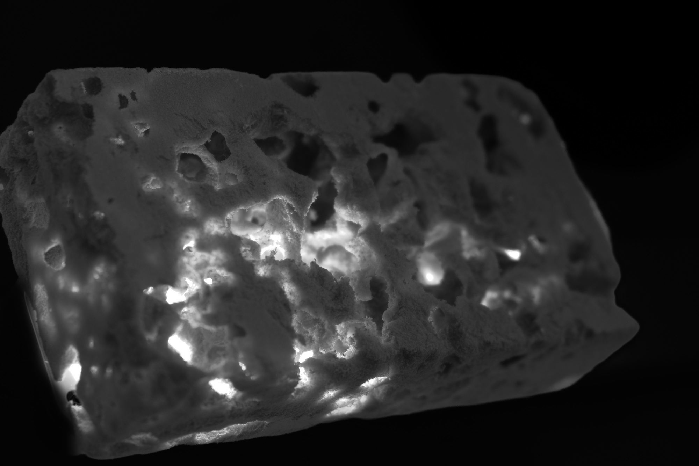
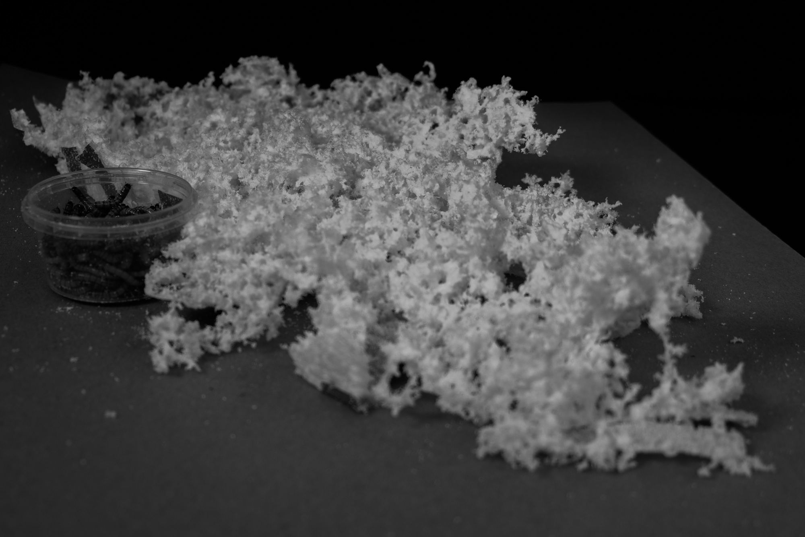
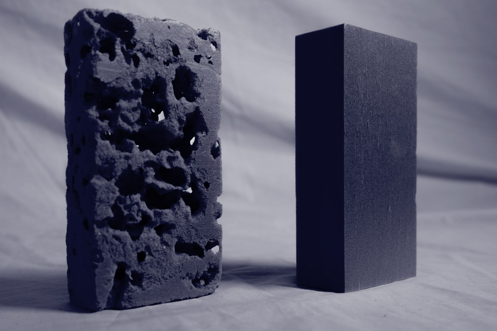
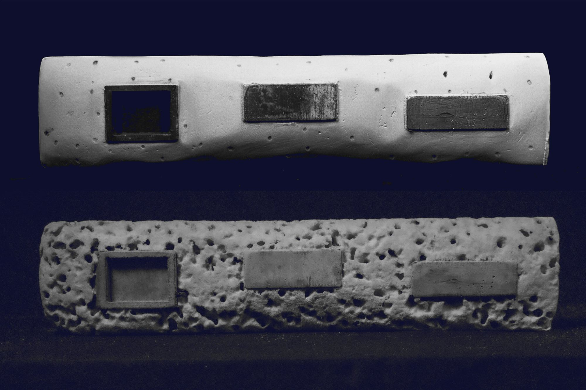
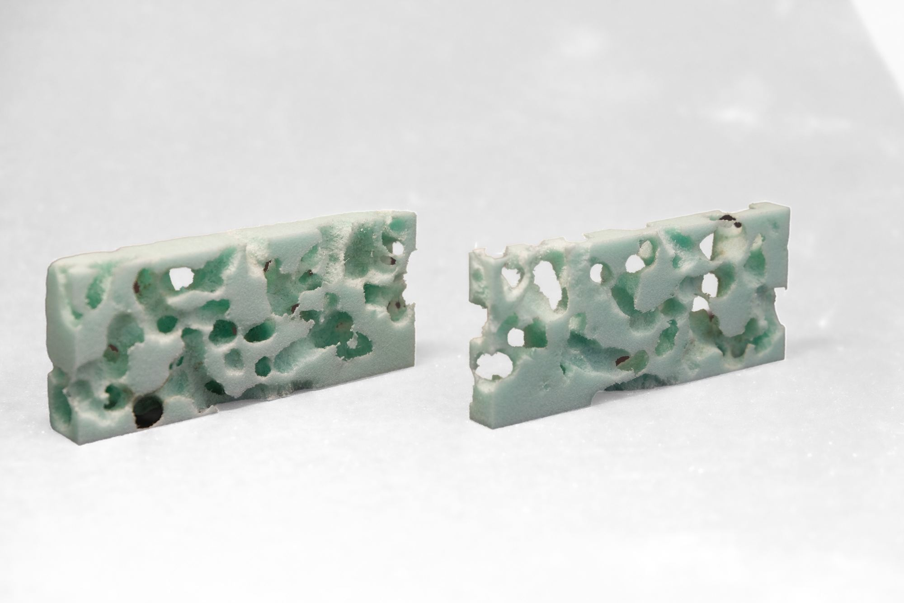
Slice and scan
Block_03 was measured, its six faces scanned, then cut into eleven 10 mm slices; both faces of each slice were scanned at 1200 dpi: twenty-two true sections through one network.
- 01MeasureBlock_03, 120 × 69.3 × 49 mm, caliper.
- 02Scan the blockThe six outer faces, scanned before slicing.
- 03Slice and scanBoth faces of every slice at 1200 dpi.
- 04Twenty-two sectionsSlices S01–S11, faces A and B, at the same scale. A faces the previous slice, B faces the next; S01 A and S11 B are the painted ends of the block.
- 05Segment and registerEach scan was split into foam and void by colour, and every face was aligned with its partner across the cut, with a residual error below 0.1 mm. The registered sections are the data set for the reconstruction and for the rules of the digital worms.
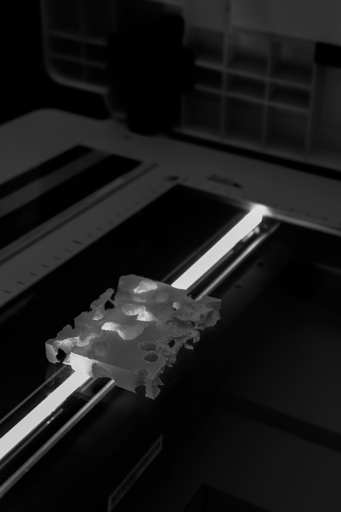
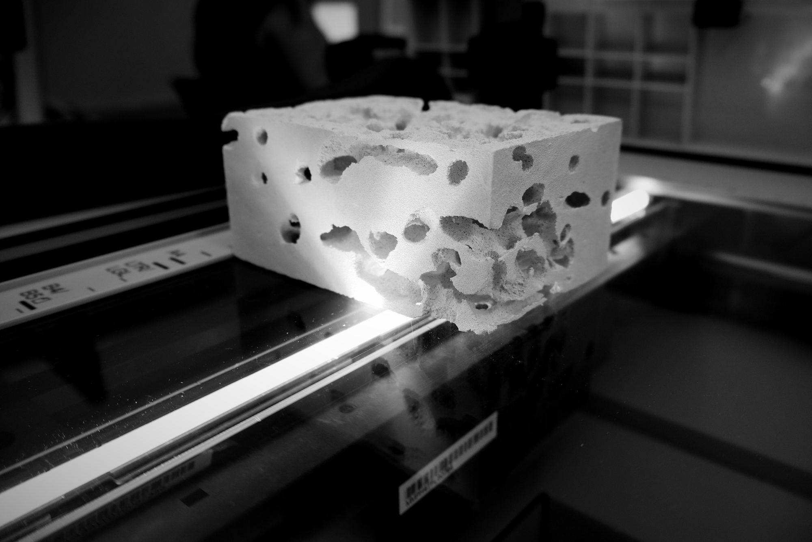
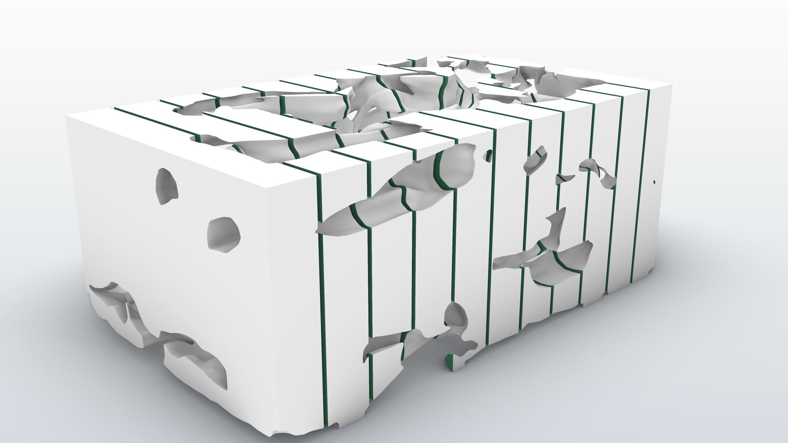
Measure · Block_03
Galleries run mostly along the long axis of the block: X 51%, Y 33%, Z 15%.
Reconstruct
The twenty-two sections were registered and blended into one continuous solid: optical flow morphs each face into the next, marching cubes and a 1.2 mm quad net become SubD and then NURBS, and the block is rebuilt as box minus void, within 0.18 mm of the scans on average.
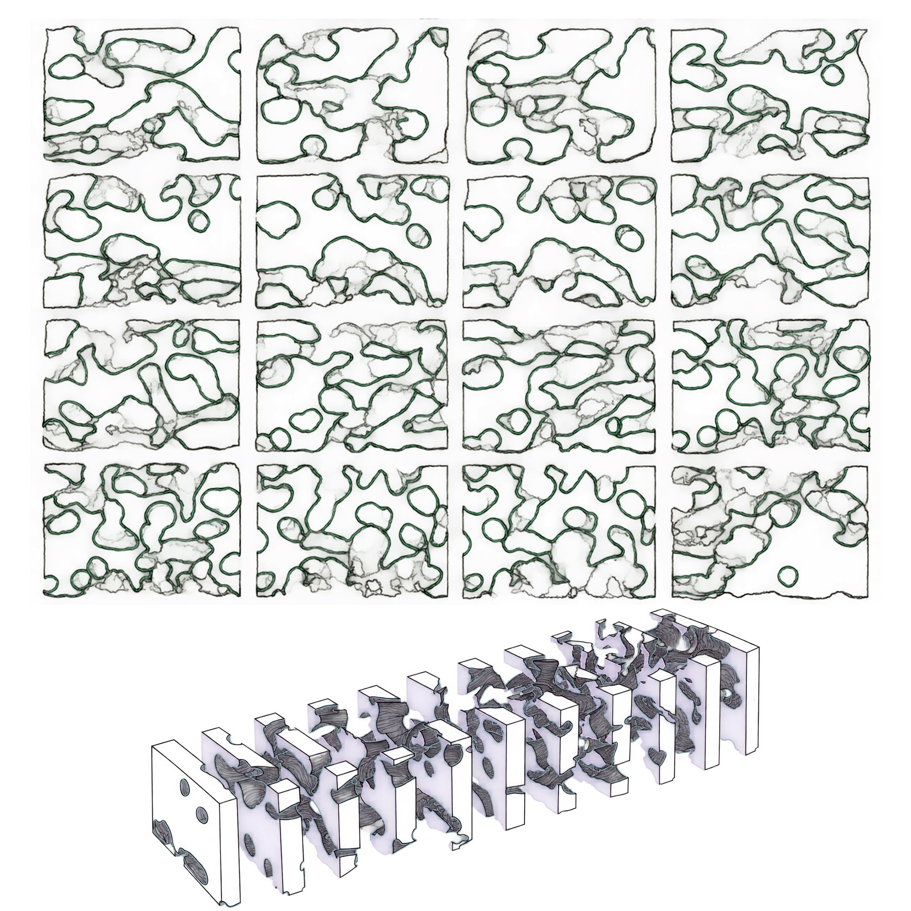
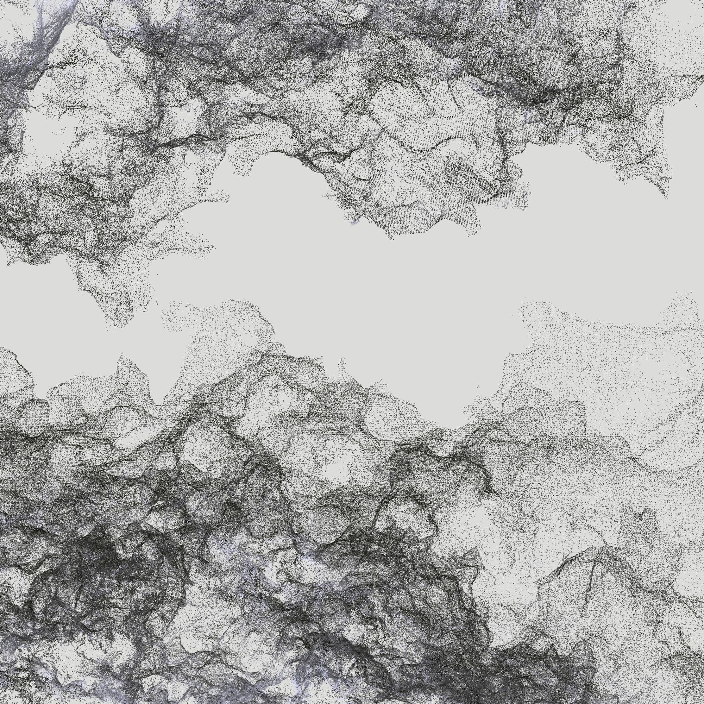
Where the script comes from
The tool grew in six steps over the semester, each solving the main limit of the one before: surface only, one cut, serial sections, rules, our own model, any volume.
- 01Pink brickPhotographed on every side; darker pixels read as deeper holes and drive Boolean cutters. 22% void, but the inside is only a guess.
- 02Green blockSplit in two and photographed; camera poses solved from marks, rays seen through the holes carve the void. 25% void, 98% in one network.
- 03Block_03Cut on purpose: eleven slices, twenty-two scanned sections, rebuilt within 0.18 mm. The first true measurement of the inside.
- 04SimulatorThe numbers become rules for agent worms in a voxel grid, written in Python for Rhino 8. Accurate, but five to seven minutes a run.
- 05Model_01The same worms, scaled ×2.93, erode our own model: 292 worms, the wooden base as a shield, delivered as mesh and NURBS.
- 06GrasshopperEverything extra removed: one component erodes any closed volume in ten to fifteen seconds and returns the void and its sections.
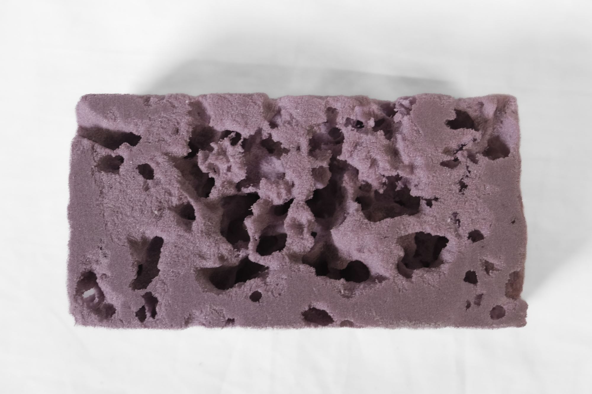
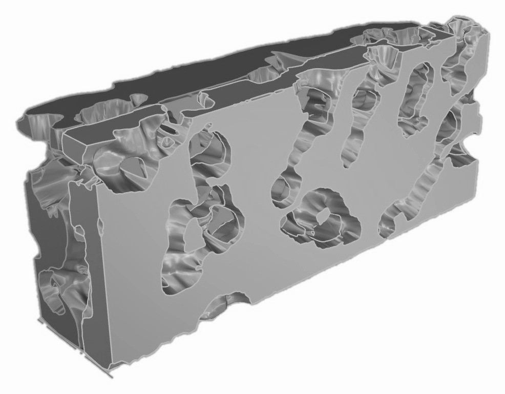
Rules · calibrated on Block_03
| Rule | Value | Behaviour |
|---|---|---|
| Persistence | 0.92 | keeps heading, turns gently |
| Axis bias | 1 / 0.6 / 0.3 | favours X, then Y, rarely Z |
| Radius | 3.4 mm median | log-normal, 1.6 to 6 mm |
| Branching | 0.035 / step | a new worm splits off |
| Chamber | 0.02 / step | local widening ×1.6 |
| Follow | 0.9 | drawn to eaten foam |
| Widen | ×1.25 | inside an existing gallery |
| Skin | 1.2 mm | turns back at the surface |
| Stop | 51% void | new worms until reached |
Simulate
Each measured property became a rule. A digital worm moves forward and eats a sphere around itself, keeps 92% of its previous direction, prefers the long axis, reuses galleries that are already open and turns back near the skin, so it breaks through only at its own entry hole. New worms enter until the target void ratio is reached.
How a volume gets eaten
- 1The volume becomes a grid of cells, each foam or empty.
- 2Worms walk through it and mark what they eat; the shield and a thin skin are never touched.
- 3They stop when the void ratio is reached; only the largest connected network is kept.
- 4A smooth surface is built from min(inside, 1 − void), so thin membranes over shallow tunnels survive.
- 5The skin snaps back onto the source, the void is measured and the volume is cut into sections.
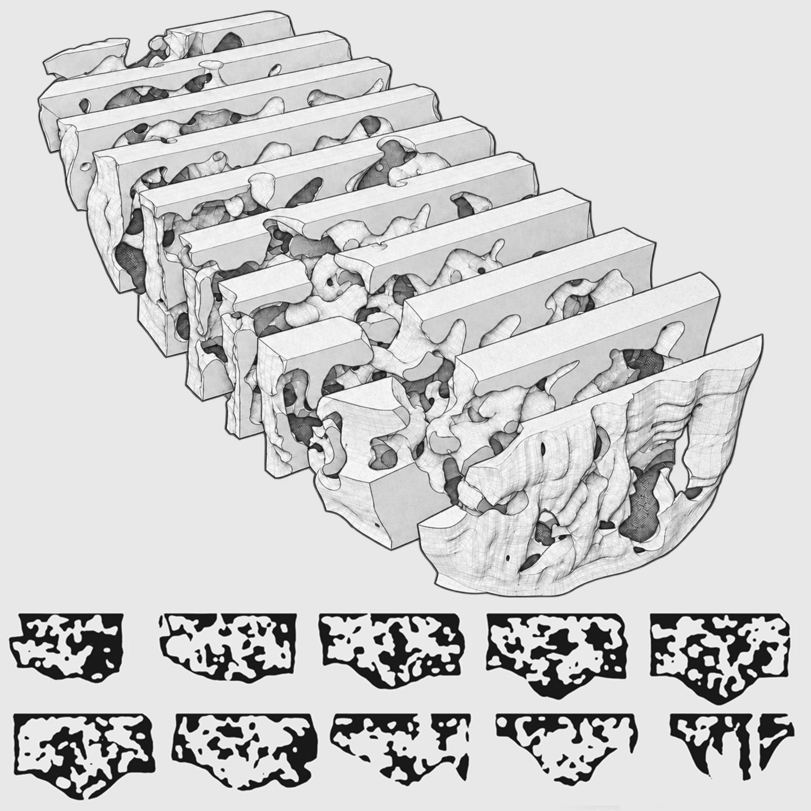
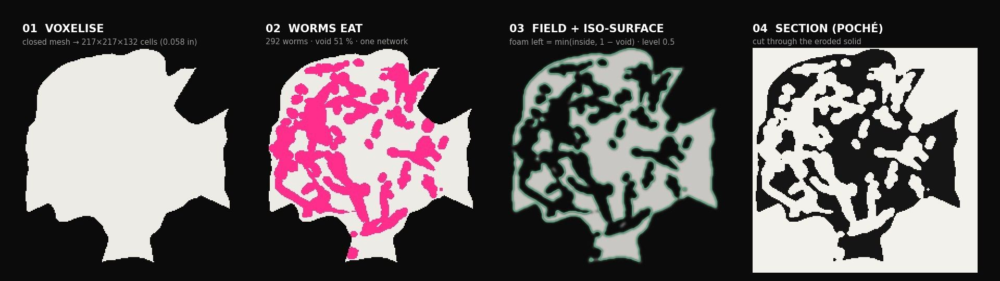
The sliders
| Input | In simple words |
|---|---|
| void_ratio | how much is eaten: time |
| seed | where it is eaten: pattern |
| resolution | cell size: precision against speed |
| tunnel_radius | calibre of the galleries |
| openness | outside entries vs inner branches |
| shield | surfaces the worms must never cut |
Two sliders, nine grounds. Void ratio sets how much is eaten, the seed sets where. The same section through Model_01: targets of 0.3, 0.5 and 0.7 gave 28.5, 51.5 and 74.9% on average, and all nine meshes are closed and watertight.
Not a copy of the shape of Block_03, but the behaviour of its worms, tuned with its real numbers, able to run on any closed volume.
The simulated network is slightly more branched than the real block: a family resemblance, not a replica.
Tool
In design, the Grasshopper component turns erosion into decisions: void ratio as time, seed as pattern, tunnel radius and openness as character, and a shield for anything that must never be cut. It returns one connected gallery network, the void volume and the section curves for physical models.
Model_01
The upper volume of the physical model (12.5 × 12.5 × 7.6 in) was eroded with the calibrated rules, scaled 2.93 times so the galleries keep their character: 292 worms, the wooden base as a shield, ten slices of 1.15 in. Carved at full scale, Model_01 tested whether the rules survive the jump from a foam block to architecture.
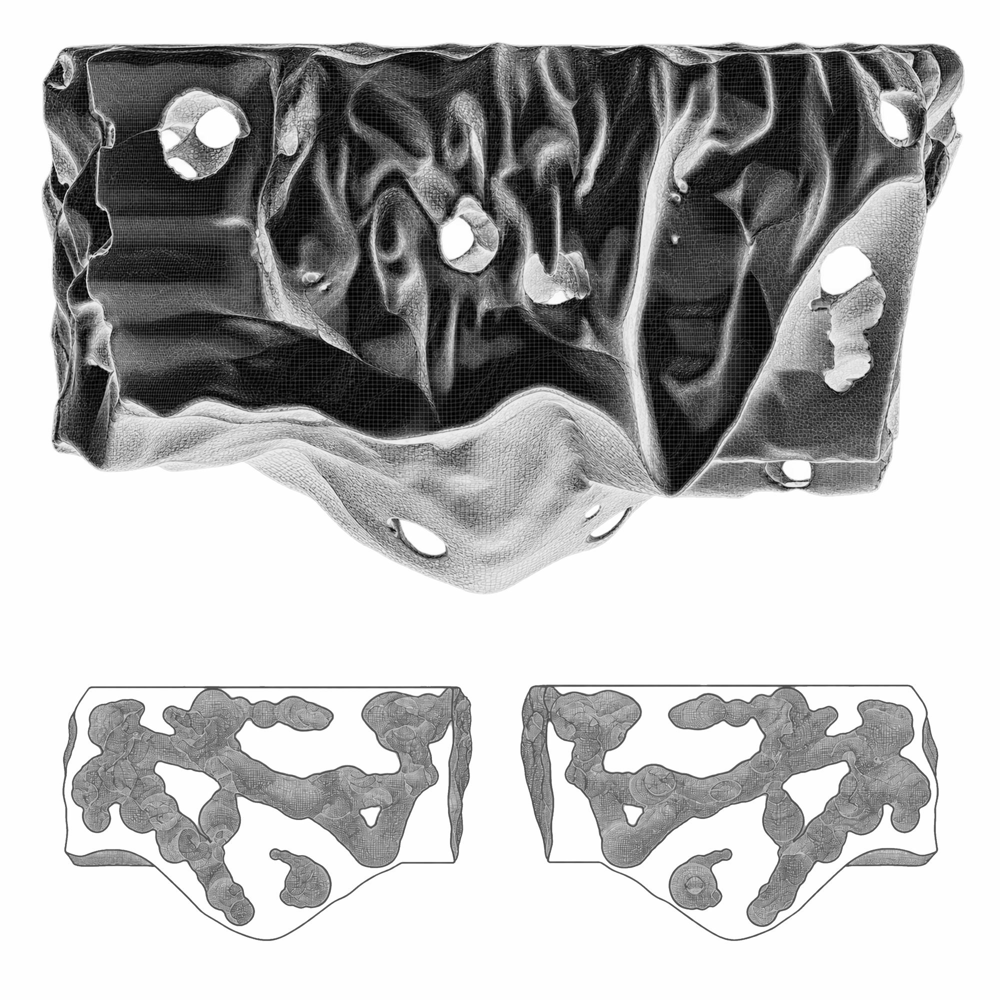
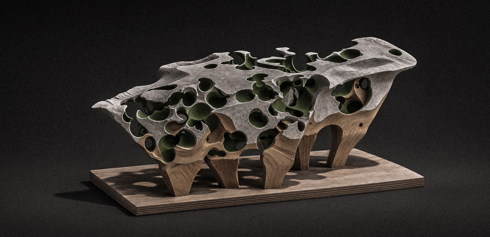
Process
The method was built step by step. Block_03, a foam block eaten by superworms, was measured, cut into eleven 10 mm slices and scanned on both faces at 1200 dpi: twenty-two true sections through one network. The sections were registered with an error below 0.1 mm and rebuilt as one continuous solid. From this data set came the rules of the digital worms: how they keep heading, branch, widen and turn back at the surface. In design, the Grasshopper component turns erosion into decisions: void ratio as time, seed as pattern, tunnel radius and openness as character, and a shield for anything that must never be cut. Carved at full scale, Model_01 tested whether the rules survive the jump from a foam block to architecture.